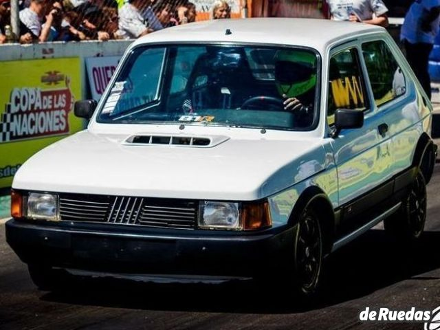

FIAT 147
El Fiat 147 fue un automóvil del segmento B producido en Sudamérica por el fabricante italiano Fiat entre los años 1976 y 1997.1 Está basado en el Fiat 127 y representa una adaptación del mismo destinada a ciertos países emergentes. Es uno de los primeros producidos en Sudamérica con un motor delantero transversal, y su sucesor es el Fiat Uno. Es un hatchback de dos volúmenes y tres puertas, mientras que las versiones sedán de dos puertas laterales y tres volúmenes, la familiar de tres puertas, y la furgoneta derivada del mismo, se denominan respectivamente Oggi, Panorama y Fiorino.
El 147 es un automóvil con motores de tracción delantera que estuvo disponible en dos versiones primero, ambas con motores de gasolina: un motor de 1116 centímetros cúbicos, de 57 CV y otro de 1300 centímetros cúbicos, de 61 CV. Ambos tuvieron una caja manual de cambios de cuatro y cinco velocidades. También hay otra versión de 850 centímetros cúbicos. En Venezuela, se comercializó además el Fiat Tucán, sucesor del Fiat 147, similar al Fiat oggi.
